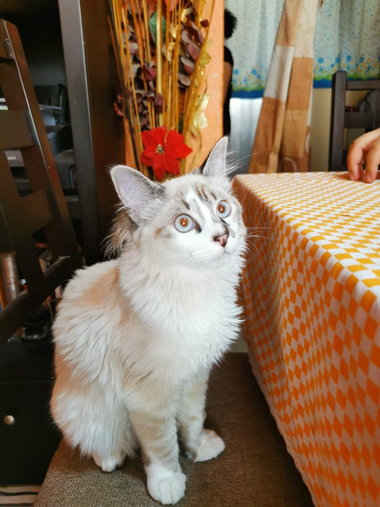
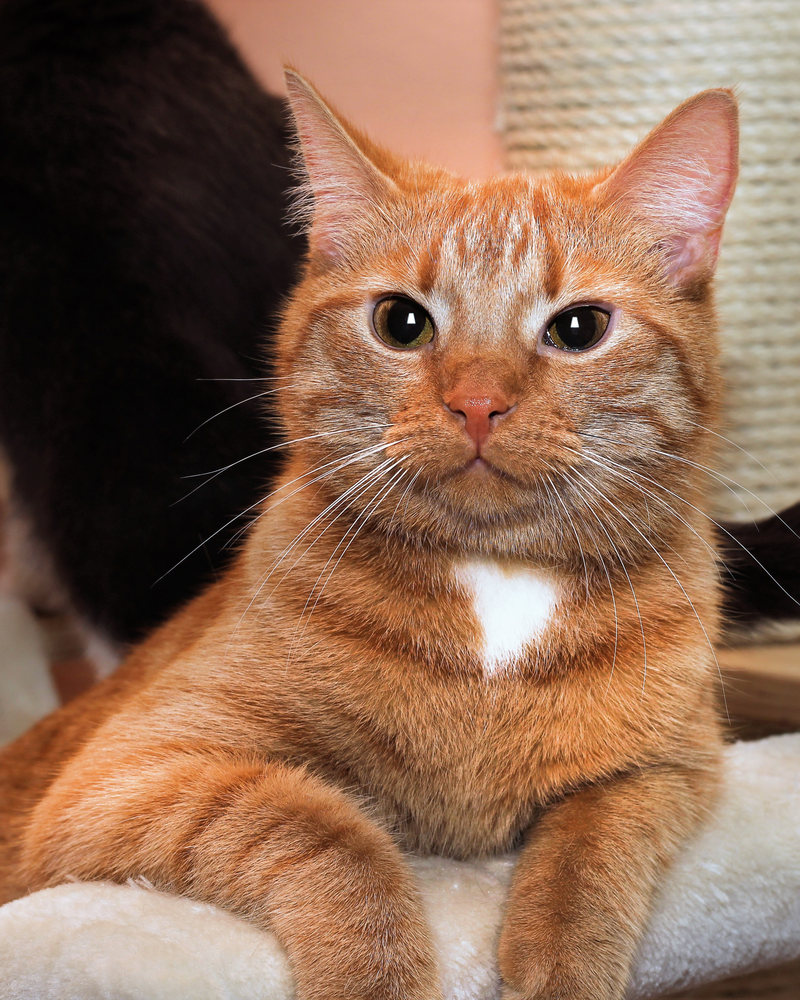
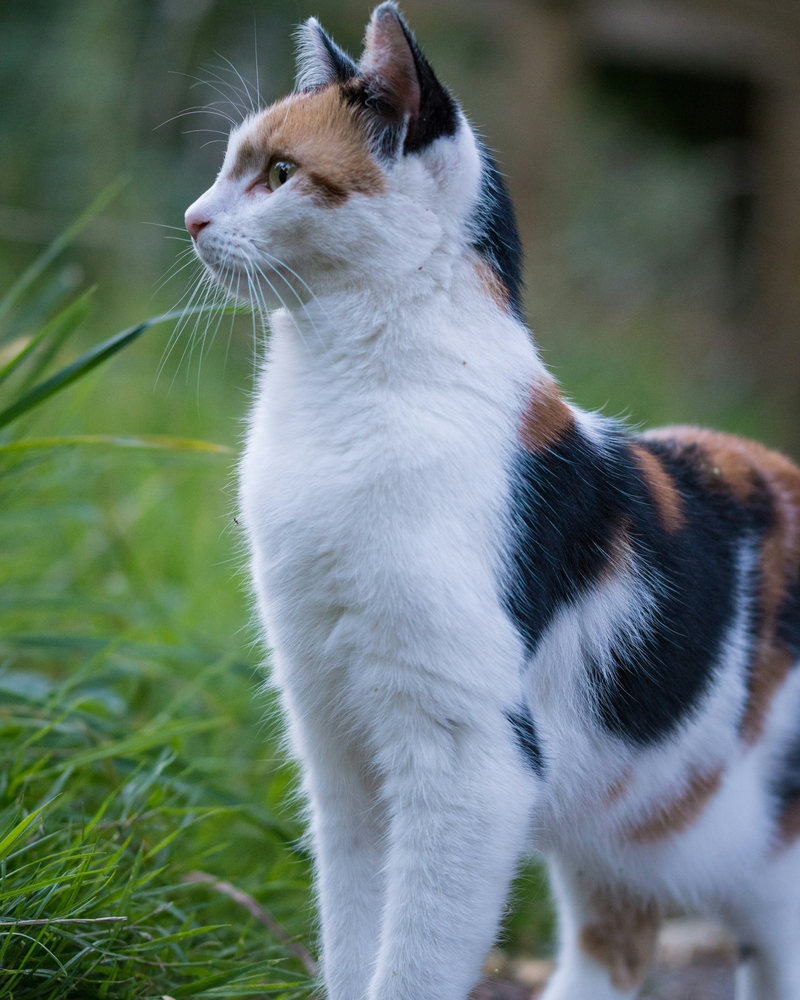
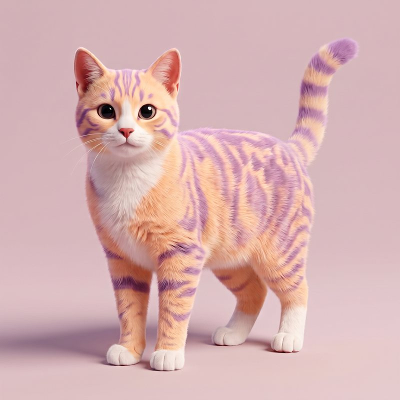
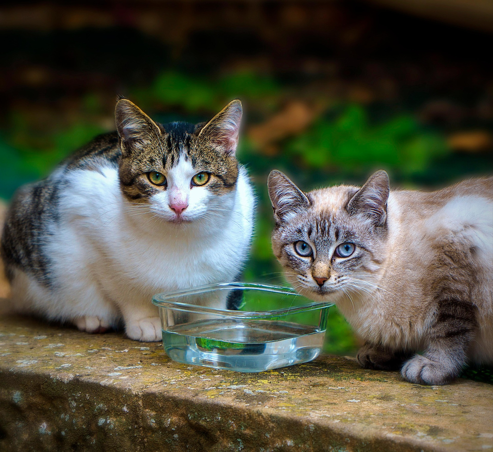

Adopciones responsables
Cada michi cuenta con una ficha informativa y un proceso de solicitud para promover decisiones conscientes.
Encuentra a tu nuevo mejor amigo. Conoce su historia, descubre su personalidad y comienza una adopción responsable.

♥AdoptaAprende a acompañar a tu felino con recomendaciones sobre alimentación, higiene, salud y adaptación a un nuevo hogar.

✿CuidaConoce las veterinarias aliadas y los recursos de orientación que apoyan la salud y el bienestar de nuestros futuros compañeros.

✚SaludUn proyecto comprometido con la adopción responsable y el bienestar felino.
Cada michi cuenta con una ficha informativa y un proceso de solicitud para promover decisiones conscientes.
Conoce su edad, personalidad e historia antes de dar el siguiente paso.
Consulta recursos de cuidados y un directorio veterinario en preparación.
Conoce a nuestro gatito en tres dimensiones y descubre el símbolo que representa nuestro proyecto.

Arrastra para verlo desde diferentes ángulos. Puedes activar o detener su giro y regresar a la vista inicial.
El modelo 3D se carga solo cuando lo solicitas.
El símbolo de Tu Michi Adopción cobra vida para expresar el vínculo entre los felinos y sus futuras familias.
Descubre a los gatitos disponibles. Detén el movimiento cuando quieras y elige a quién conocer.
Explora las fichas y descubre qué gatito puede adaptarse a tu hogar.
Llena el formulario de adopción de muestra para practicar el proceso.
Revisa tu solicitud y su estado en la sección correspondiente.

Encuentra información introductoria sobre alimentación, higiene, salud y cómo preparar tu casa.
Explorar el blog